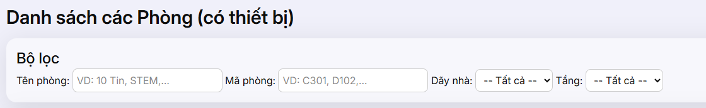

Tìm phòng

🧭 Mục đích chính của chức năng “Tìm phòng”:
-
Hỗ trợ tìm kiếm nhanh các phòng có thiết bị theo nhiều tiêu chí như mã phòng, tên phòng, tầng, dãy nhà, tình
trạng thiết bị...
- Phục vụ công tác quản lý tài sản, thiết bị trong trường học hoặc cơ sở giáo dục một cách hiệu quả.
- Tiết kiệm thời gian cho giáo viên, nhân viên quản lý khi cần kiểm tra tình trạng thiết bị tại từng địa điểm
cụ thể.